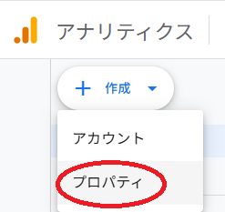
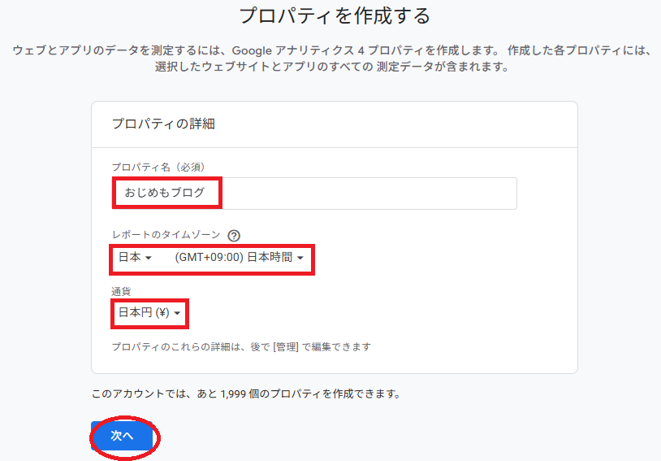
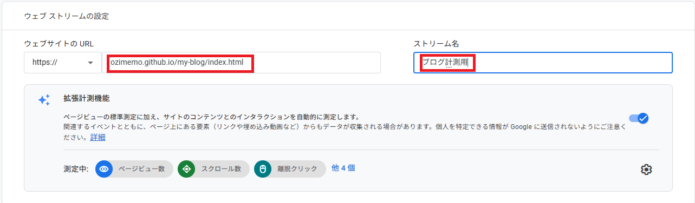
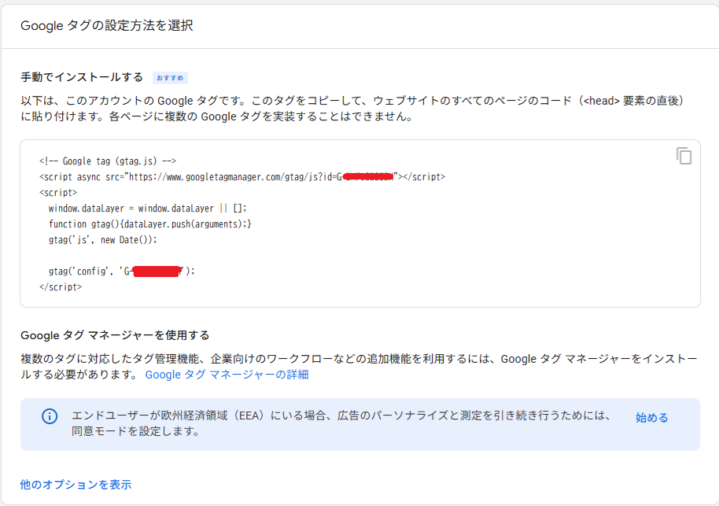
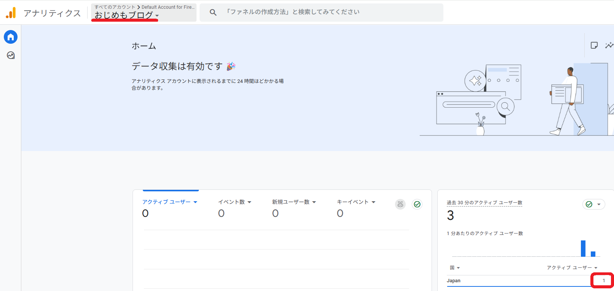
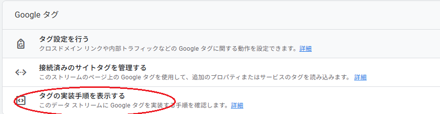
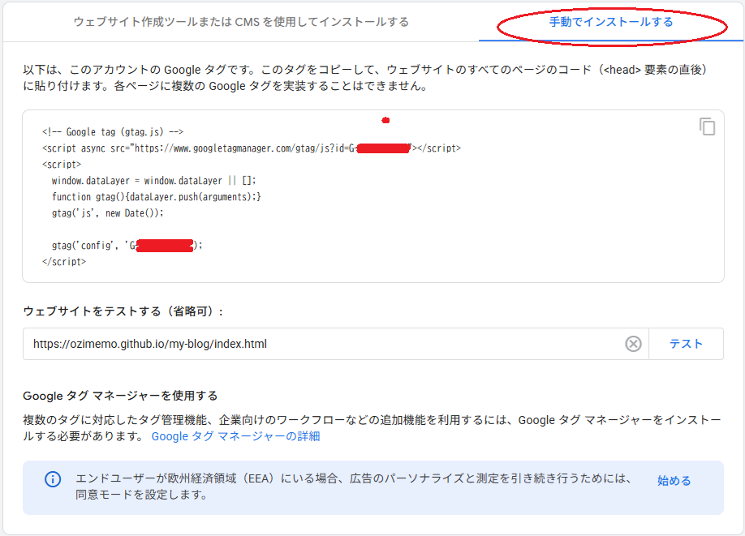

カテゴリ：ブログ作成～公開後～
投稿日：2025年5月19日
11回目となる今回は、Google Analyticsというツールを利用してアクセス解析を行います！
Google Analyticsとは何かというと、
Googleが提供する無料のアクセス解析ツールで、ブログにどこから何人きて、どの記事を読んだか？スマホ？パソコン？何分くらい？
などが分かるようです！これが分かることによって、
などなど、解析したデータを活用することでブログのアクセス数を増やす方向性が見えてくるはず！
ということで早速手順を聞きました。全体の流れは以下のようになります。
手順1は割愛し、手順2から始めます。
Google Analyticsに登録する。
登録後、測定を開始するボタンが表示されてアカウント名を入力するようなのですが、私の環境では表示されませんでした。
以前別の目的で利用したことがあるのが関係しているかもしれません。
ということで手順3に進みます。プロパティを作成します。
左上の+マークからプロパティの作成。
プロパティ名をブログ名に、タイムゾーンを日本、通貨を日本円にして次へを押します。
次の画面に出てくるビジネスの説明は回答必須ですが適当でいいみたいなので割愛。
データ収集プラットフォームはウェブを選択。（スマホアプリじゃないので）
ウェブサイトのURL（ブログのURL）を入力、ストリーム名はなんでもOK。
すると次のような画面が出てきて、貼り付けるタグが出てきます。
これを<head>要素の直後に書き足します。
書き足したら、テータが収集されているか確認します。アナリティクスの画面に戻って、
アカウントからブログ名のプロパティを選択、右下のアクティブユーザーが1以上になっていればOK！
あとは全てのページにタグを貼り付けて完了です！
再度タグを表示させたい場合は、設定からデータストリームを選択します。
下部の、タグの実装手順を表示する→手動でインストールを選択すると表示されます。
 あとはこのタグを全てのページに貼り付ければOK！
これでアクセス解析はできそうなので今回はここまで！！！
カテゴリ：ブログ作成～公開後～